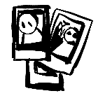
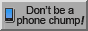
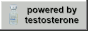

hey, can i be real with you for a second? i'm still in my early 20's. who knows who i am or what i want. i sure as hell have my ideas, but at the end of the day... who knows? that's the fun part though i suppose, doing new and exciting shit for the hell of it and figuring it all out as you go. an "about" section feels kind of redundant after admitting all of that, but here's what i do know:
my name is crow and i'm a big ol' queer furry autist (and artist, if you couldn't tell). as much as i tend to be a very private person by nature, i still do enjoy people and do my best to still be somewhat approachable :3c
i like to think i'm a jack of all trades to a certain degree. apart from digital art, i also thoroughly enjoy listening to bad music, creative writing, fursuit making (on occasion), and probably a million other half-assed and mostly forgotten hobbies throughout the years. if you were to ever ask me if i've done x or y creative thing, i probably have. even though i study psychology, i'm currently dedicated to learning german ... drück mir die daumen :b

admittedly, i kind of despise social media. something about being continuously perceived online drains me to no end and i doubt this is a natural thing for our monkey brains to feel; i know the internet like the back of my hand, but man, am i tired of it sometimes! social and emotional connection through art is the ultimate goal for me. i hope the things i create reach others in a lasting way, because i think that i'd rather die than to have my art be an image to mindlessly scroll by. with that being said, this is the age of the social internet, and anyone who wants to put themselves out there must play the game by its rules... so, apart from my little site, you can find (and contact) me here:


